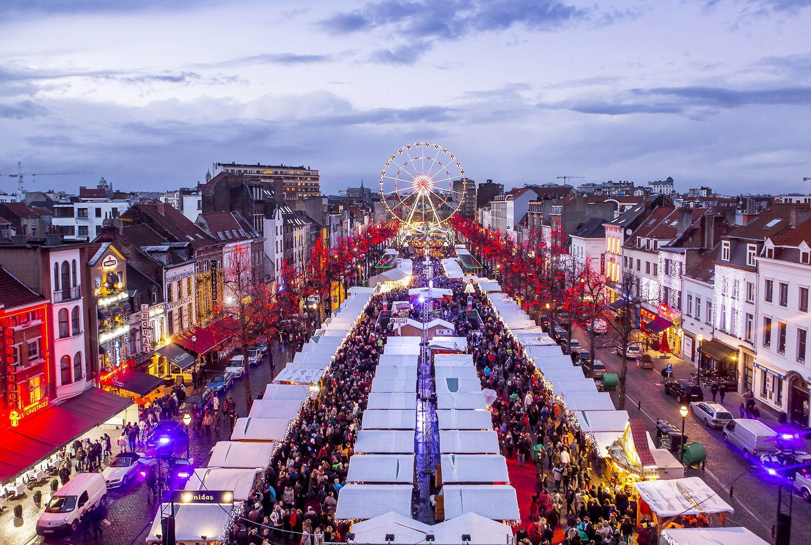
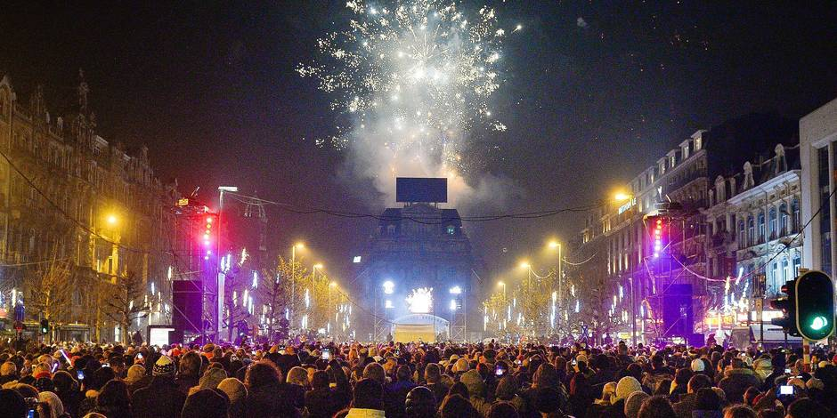

Winterpret @Brussel - 24/11> 31/12/2017
Kerstmarkt @ Bosvoorde - 30/11>03/12/2017
Magische kerstmarkt @ Anderlecht - 14>17/12/2017
Kerstmarkt @ Ixelles - Flageyplein - 08>10/12/2017
Xmas Festival @St.-Pieters-Woluwe - 13>17/12/2017
Zweden/Zweedse Kerstmarkt @ Etterbeek - 24>26/11/2017
Kerstmarkt van Ateliers des Tanneurs @ Brussel - 08>10/12/2017
Ambachtelijke kerstmarkt in la Tricoterie @ Sint-Gillis - 10 en 17/12/2017
X-MAS SHOP 10-12 @ Brussel - 01>24/12
Op zondag 31 december 2017 op de esplanade van het Atomium.
Het traditionele nieuwjaarsvuurwerk vindt plaats op 31 december om middernacht, deze keer bij Paleis 5 op de Heizel in Laken.
Het publiek kan het vuurwerk bewonderen vanop de esplanade van het Atomium.
Locatie: Esplanade van het Atomium
Adres: Esplanade van het Atomium - 1020 Brussel
Prijs en korting: gratis
Periode: zondag, 31 december, 2017 tot maandag, 1 januari, 2018
NMBS/SNCB:
Bockstael (1791 m)
Jette (1808 m)
Schaarbeek (3176 m)
MIVB/STIB:
HEYSEL (290 m)
HEYSEL (292 m)
HEYSEL (360 m)
VILLO:
281 - ATOMIUM (62 m)
1966 - 50TH ANNIVERARY OF JCDEAUX (507 m)
1967 - 50TH ANNIVERSARY OF JCDECAUX (507 m)